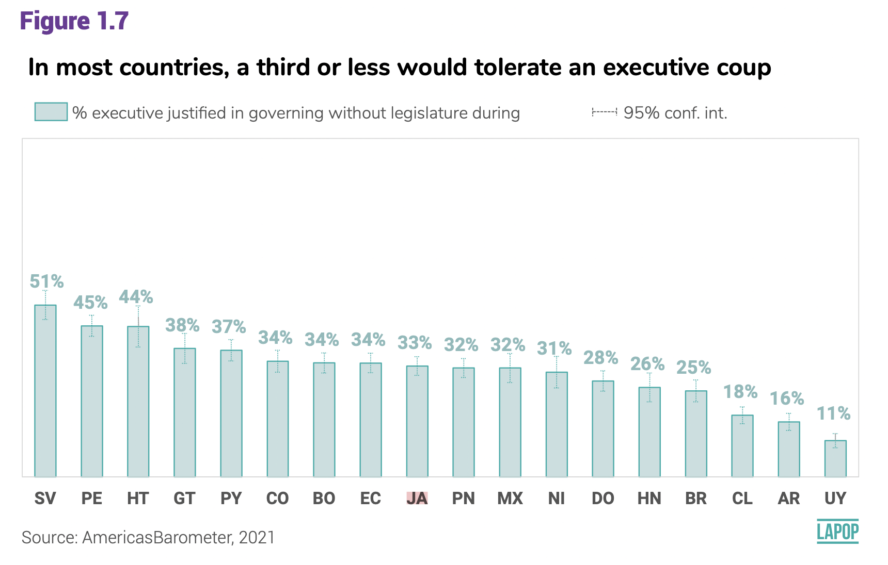
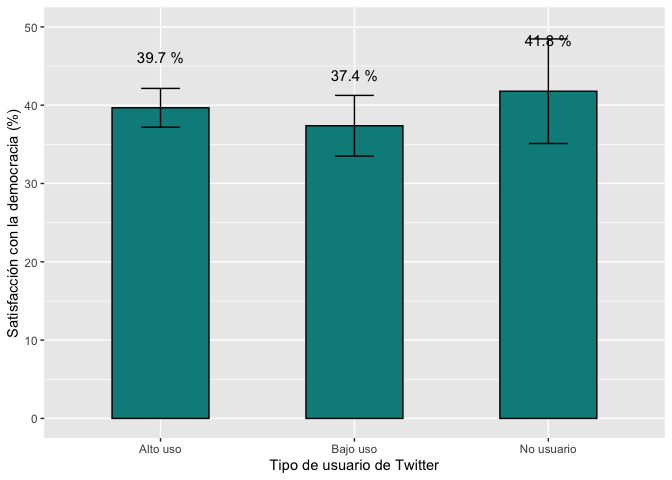
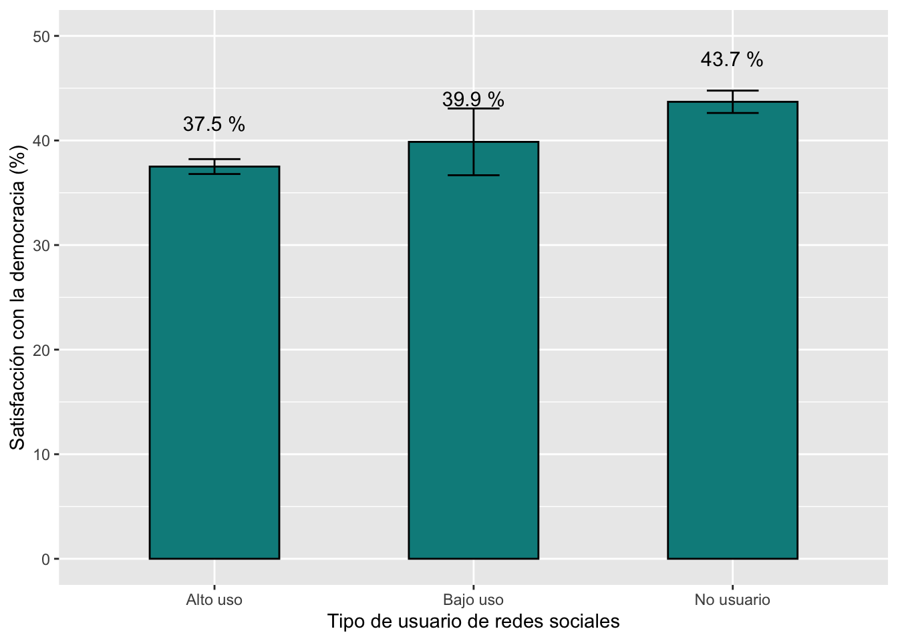
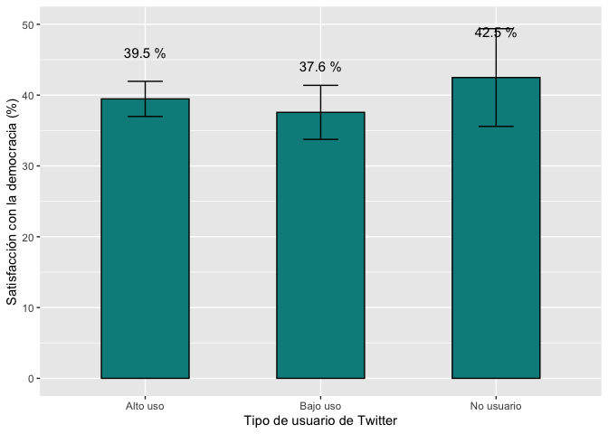

Tolerancia a los golpes ejecutivos
El gráfico 1.7 del reporte El pulso de la Democracia para la ronda
del Barómetro de las Américas 2021 presenta los resultados del
porcentaje de ciudadanos que tolera un golpe ejecutivo. Este gráfico,
además, presente el intervalo de confianza al 95% de este porcentaje en
cada país.

La variable para construir este gráfico es “jc15a” que está fraseada:
¿Cree usted que cuando el país enfrenta momentos muy difíciles, se
justifica que el presidente del país cierre el Congreso/Asamblea y
gobierno sin Congreso/Asamblea? Las opciones de respuesta son:
- Sí se justifica
- No se justifica
Describiendo la tolerancia a los golpes ejecutivos
Para calculas los porcentajes de ciudadanos que justifican o toleran
los golpes ejecutivos se tiene que recodificar esta variable, de tal
manera que aquellos que justifican tengan el valor 100 y los que no
justifican, el valor 0. En este caso se usa el comando
recode y se tabula, mediante table, para
verificar la recodificación.
lapop21$jc15ar <- car::recode(lapop21$jc15a, "1=100; 2=0")
table(lapop21$jc15ar)
##
## 0 100
## 14711 5908
Para calcular el porcentaje de ciudadanos que toleran los golpes
ejecutivos se puede usar los comandos table y
prop.table. La nueva variable “jc15ar” es una variable
dummy. En este tipo de variables, la media corresponde a la proporción
de respuestas 100. Es decir, si calculamos la media de esta variable, se
está calculando el porcentaje para todos los entrevistados. En esta
sección vamos a tratar a esta variable como si fuera una variable
numérica. En sentido estricto es una variable categórica nominal. Los
cálculos de desviaciones estándar y luego de intervalos de confianza,
por lo tanto, son referenciales.
El resultado indica que en toda la muestra, el porcentaje de
ciudadanos que toleran los golpes ejecutivos es de 28.7%.
summary(lapop21$jc15ar)
## Min. 1st Qu. Median Mean 3rd Qu. Max. NA's
## 0.00 0.00 0.00 28.65 100.00 100.00 40042
Intervalos de confianza de tolerancia a los golpes ejecutivos
Para calcular el intervalo de confianza al 95% de este porcentaje, se
puede usar el comando t.test o la librería
lsr, que tiene el comando ciMean. En ambos
casos, el resultado nos indica que el porcentaje de ciudadanos que
tolera los golpes ejecutivos en la región está entre 28% y 29.3%.
t.test(lapop21$jc15ar)
##
## One Sample t-test
##
## data: lapop21$jc15ar
## t = 90.996, df = 20618, p-value < 2.2e-16
## alternative hypothesis: true mean is not equal to 0
## 95 percent confidence interval:
## 28.03599 29.27038
## sample estimates:
## mean of x
## 28.65318
library(lsr)
ciMean(as.numeric(lapop21$jc15ar), na.rm=T)
## 2.5% 97.5%
## [1,] 28.03599 29.27038
Tolerancia a los golpes ejecutivos por país
El gráfico 1.7 muestra el porcentaje de ciudadanos que toleran los
golpes ejecutivos por país. Para replicar este gráfico, primero tenemos
que definir que la variable “pais” es de tipo factor. Se guarda este
cambio en una nueva variable “paises”, la que se etiqueta con las siglas
de cada país.
lapop21$paises <- as.factor(lapop21$pais)
levels(lapop21$paises) <- c("MX", "GT", "SV", "HN", "NI", "CR",
"PN", "CO", "EC", "BO", "PE",
"PY", "CL", "UY", "BR", "AR", "DO",
"HT", "JA", "GU")
table(lapop21$paises)
##
## MX GT SV HN NI CR PN CO EC BO PE PY CL UY BR AR
## 2998 3000 3245 2999 2997 2977 3183 3003 3005 3002 3038 3004 2954 3009 3016 3011
## DO HT JA GU
## 3000 3088 3121 3011
Para calcular estos porcentajes por país, se puede usar varias
alternativas. Por ejemplo, el comando tapply permite
calcular la media de una variable por grupos de otra variable.
tapply(lapop21$jc15ar, lapop21$paises, mean, na.rm=T)
## MX GT SV HN NI CR PN CO
## 30.312500 36.687307 48.068670 22.660819 31.111111 NaN 28.962444 35.041447
## EC BO PE PY CL UY BR AR
## 31.944444 32.082414 43.805613 34.459459 16.544118 8.552632 23.862069 13.795620
## DO HT JA GU
## 25.495959 44.042553 30.583215 NaN
Otra forma es usar las librerías plyr y
dplyr que incluye el comando ddply. Este
comando requiere que se defina el dataframe “lapop21”, la variable de
agrupamiento “paises” y luego las funciones que se requiere en cada
grupo, que en este caso son “mean” y “sd”.
library(plyr)
library(dplyr)
ddply(lapop21, "paises", summarise, mean=mean(jc15ar, na.rm=T), sd=sd(jc15ar, na.rm=T))
Como se observa en la tabla, no hay datos para Costa Rica, ni para
Guyana. Con el cálculo de la desviación estándar, se podría calcular el
límite inferior y superior del intervalo de confianza.
Esto se puede hacer de manera directa con la librería
Rmisc. Esta librería tiene el comando
group.CI, que calcula la media, el límite inferior y
superior de una variable por grupos de otra variable. Esta tabla se
guarda en un objeto llamado “golpe”. Este comando no incluye las filas
de los países donde no hay datos, por lo que no hay filas de Costa Rica
ni de Guyana.
library(Rmisc)
golpe <- group.CI(jc15ar~paises, lapop21)
golpe
Con esta tabla podemos replicar el gráfico 1.7 con la librería
ggplot2. Para incluir los intervalos de confianza se tiene
que agregar la especificación geom_errorbar(). La tabla
“golpe” tiene el dato de “ymin” en la columna “jc15ar.lower” y el dato
de “ymax” en la columna “jc15ar.upper”. Estos datos se deben ingresar en
la especificación aes dentro de geom_errorbar.
Además, se tiene como opciones width para especificar el
ancho de las bigotes de las barras de error, color para
especificar el color, cex para especificar el ancho de las
líneas y linetype para especificar el tipo de líneas, en
este caso puntuadas.
Para poder ordenar las barras de acuerdo al valor de la variable, se
puede usar la especificación reorder(grupo, variable)
dentro de la especificación aes de ggplot.
library(ggplot2)
graf1 <- ggplot(golpe, aes(x=reorder(paises, -jc15ar.mean), y=jc15ar.mean))+
geom_bar(width=0.5, fill="darkslategray3", colour="#69b3a2", stat="identity")+
geom_errorbar(aes(ymin=jc15ar.lower, ymax=jc15ar.upper), width=0.4,
color="darkcyan", cex=0.4, linetype=3)+
geom_text(aes(label=paste(round(jc15ar.mean, 1), "%")), vjust=-4.4, size=2.5)+
xlab("País") + ylab("Tolerancia a golpes ejecutivos (%)")+
ylim(0, 60)
graf1

Estos datos, sin embargo, no son exactamente iguales a los
presentados en el gráfico 1.7 debido a que estos cálculos no incluyen el
efecto de diseño. Más adelante, se verá cómo incluir el efecto de diseño
para replicar el gráfico exactamente.
Satisfacción con la democracia
El gráfico 3.9 del reporte El Pulso de la Democracia de la ronda
2018/19 presenta el porcentaje de entrevistados que está satisfecho con
la democracia por tipo de usuarios de redes sociales.

La variable satisfacción con la democracia se llama “pn4” y está
codificada de la siguiente manera:
- Muy satisfecho
- Satisfecho
- Insatisfecho
- Muy insatisfecho
La nota 21 de este reporte indica que “Se codifica a los
entrevistados que seleccionan (1) o (2) como satisfechos con la
democracia”. Por lo tanto, se tiene que recodificar esta variable. En
este caso se usa el comando recode y se tabula, mediante
table, para verificar la recodificación.
library(car)
table(lapop18$pn4)
##
## 1 2 3 4
## 1727 8916 12455 3855
lapop18$pn4rr <- car::recode(lapop18$pn4, "1:2=100; 3:4=0")
table(lapop18$pn4rr)
##
## 0 100
## 16310 10643
La nueva variable “pn4rr” es una variable dummy. En este tipo de
variables, la media corresponde a la proporción de respuestas 100. Es
decir, si calculamos la media de esta variable, se está calculando el
porcentaje para todos los entrevistados. En esta sección vamos a tratar
a esta variable como si fuera una variable numérica. En sentido estricto
es una variable categórica nominal. Los cálculos de desviaciones
estándar y luego de intervalos de confianza, por lo tanto, son
referenciales.
summary(lapop18$pn4rr)
## Min. 1st Qu. Median Mean 3rd Qu. Max. NA's
## 0.00 0.00 0.00 39.49 100.00 100.00 1089
Estos resultados muestran una media de 39.5, es decir el 39.5% de los
entrevistados están satisfechos con la democracia. Se puede calcular
también el intervalo de confianza de esta variable de varias formas. Una
primera es mediante la prueba t de una muestra, usando el comando
t.test. Otra forma es usando el comando ciMean
de la librería lsr.
t.test(lapop18$pn4rr)
##
## One Sample t-test
##
## data: lapop18$pn4rr
## t = 132.62, df = 26952, p-value < 2.2e-16
## alternative hypothesis: true mean is not equal to 0
## 95 percent confidence interval:
## 38.90364 40.07087
## sample estimates:
## mean of x
## 39.48726
library(lsr)
ciMean(lapop18$pn4rr, na.rm=T)
## 2.5% 97.5%
## [1,] 38.90364 40.07087
Estos resultados indican que el intervalo de confianza de la media de
satisfacción con la democracia varía entre 38.9% y 40.1% con 95% de
confianza. Se podría cambiar este valor por defecto a 99% de confianza
agregando la especificación conf = 0.99 al comando
ciMean.
Satisfacción con la democracia por grupos de consumo de información
en redes sociales
El informe usa una variable que mide la “exposición frecuente a
información política”. Esta variable se construye de una manera
compleja, sobre la base de las 3 redes sociales por las que se pregunta.
En este caso vamos a empezar con una recodificación más simple para
recrear los intervalos de confianza de la variable “satisfacción de la
democracia” por grupo de frecuencia de consumo de información de cada
red social. Luego se procederá a replicar la variable que se usa en el
reporte. La frecuencia de consumo de información (variables “smedia2”
para Facebook, “smedia5” para Twitter y “smedia8” para Whatsapp) de cada
red social se mide en la siguiente escala:
- Diariamente
- Algunas veces a la semana
- Algunas veces al mes
- Algunas veces al año
- Nunca
Vamos a recodificar estas variables de tal manera que aquellos que
responden diariamente o algunas veces a la semana serán clasificados
como de “alto uso”, aquellos que responden del 3 al 4 serán clasificados
como de “bajo uso” y aquellos que responden “nunca” serán clasificados
como “no usuarios”. Un esquema similar de clasificación se usa para
definir a los usuarios de las 3 redes sociales. Las nuevas variables
recodificadas, se convierten a factor y se etiquetan.
table(lapop18$smedia2)
##
## 1 2 3 4 5
## 8633 4927 1286 282 231
table(lapop18$smedia5)
##
## 1 2 3 4 5
## 795 728 422 193 220
table(lapop18$smedia8)
##
## 1 2 3 4 5
## 14151 2646 495 50 87
lapop18$smedia2r <- car::recode(lapop18$smedia2, "1:2=1; 3:4=2; 5=3")
lapop18$smedia5r <- car::recode(lapop18$smedia5, "1:2=1; 3:4=2; 5=3")
lapop18$smedia8r <- car::recode(lapop18$smedia8, "1:2=1; 3:4=2; 5=3")
lapop18$smedia2r <- as.factor(lapop18$smedia2r)
lapop18$smedia5r <- as.factor(lapop18$smedia5r)
lapop18$smedia8r <- as.factor(lapop18$smedia8r)
levels(lapop18$smedia2r) <- c("Alto uso", "Bajo uso", "No usuario")
levels(lapop18$smedia5r) <- c("Alto uso", "Bajo uso", "No usuario")
levels(lapop18$smedia8r) <- c("Alto uso", "Bajo uso", "No usuario")
table(lapop18$smedia2r)
##
## Alto uso Bajo uso No usuario
## 13560 1568 231
table(lapop18$smedia5r)
##
## Alto uso Bajo uso No usuario
## 1523 615 220
table(lapop18$smedia8r)
##
## Alto uso Bajo uso No usuario
## 16797 545 87
Con estas variables recodificadas, se puede calcular las medias (que
son los porcentajes) de satisfacción con la democracia por cada grupo de
consumo de información en redes sociales. Esto se puede hacer de
múltiples maneras. Si se requiere comparar las medias, se puede usar el
comando tapply.
tapply(lapop18$pn4rr, lapop18$smedia2r, mean, na.rm=T) #Facebook
## Alto uso Bajo uso No usuario
## 37.55182 37.94466 40.74074
tapply(lapop18$pn4rr, lapop18$smedia5r, mean, na.rm=T) #Twitter
## Alto uso Bajo uso No usuario
## 39.66777 37.37542 41.78404
tapply(lapop18$pn4rr, lapop18$smedia8r, mean, na.rm=T) #Whatsapp
## Alto uso Bajo uso No usuario
## 37.39093 38.92100 43.37349
Otra opción que puede presentar tanto la media como la desviación
estándar es mediante la librería plyr y el comando
ddply. El código solo para Facebook sería:
library(plyr)
ddply(lapop18, "smedia2r", summarise, mean=mean(pn4rr, na.rm=T), sd=sd(pn4rr, na.rm=T))
Es importante notar que en este caso no hemos indicado que
internamente no se trabaje con los valores perdidos (usando la
especificación filter(!is.na(wa_user))), por lo que la
tabla anterior presenta una fila de las observaciones NA de usuario de
la red social, donde se calcula el promedio y la desviación estándar de
la variable satisfacción con la democracia. Finalmente, una opción que
permite mostrar muchos estadísticos por cada grupo es
describeBy de la librería psych. El código
para Twitter es:
library(psych)
describeBy(lapop18$pn4rr, group=lapop18$smedia5r)
##
## Descriptive statistics by group
## group: Alto uso
## vars n mean sd median trimmed mad min max range skew kurtosis se
## X1 1 1505 39.67 48.94 0 37.1 0 0 100 100 0.42 -1.82 1.26
## ------------------------------------------------------------
## group: Bajo uso
## vars n mean sd median trimmed mad min max range skew kurtosis se
## X1 1 602 37.38 48.42 0 34.23 0 0 100 100 0.52 -1.73 1.97
## ------------------------------------------------------------
## group: No usuario
## vars n mean sd median trimmed mad min max range skew kurtosis se
## X1 1 213 41.78 49.44 0 39.77 0 0 100 100 0.33 -1.9 3.39
Sin embargo, lo que nos interesa es calcular los intervalos de
confianza para cada grupo. En el gráfico 3.9 del reporte se presenta la
media de satisfacción con la democracia, mostrado como un punto, y los
intervalos de confianza de cada grupo, mostrados como un área gris con
límites inferior y superior. Se puede usar la librería
Rmisc y el comando group.CI para calcular los
intervalos de confianza de la variable satisfacción con la democracia
por grupos de consumo de información en Facebook.
library(Rmisc)
group.CI(pn4rr~smedia2r, lapop18)
Con estos datos, por ejemplo, la media de satisfacción con la
democracia entre el grupo de alto uso de información en Facebook es
37.6%. El límite inferior del intervalo de confianza es 36.7% y el
límite superior es 38.4%. Con estos datos se podría replicar un gráfico
de barras similar al 3.9.
Intervalos de confianza de satisfacción con la democracia
La forma más fácil de graficar los intervalos de confianza por grupos
es usando el comando plotmeans.
library(gplots)
plotmeans(lapop18$pn4rr~lapop18$smedia5r,
xlab="Tipo de usuario de Twitter",
ylab="Satisfacción con la democracia",
ylim=c(0, 50),
mean.labels=T, digits=1,
connect=F
)

Esta opción muestra los intervalos de confianza pero se dificulta si
se quiere graficar las barras. La librería ggplot nos
brinda más opciones y nos permite graficar de manera similar al gráfico
3.9 del reporte, en barras, presentar los intervalos de confianza y
agregar color. Para esto, primero se guarda un dataframe “tw.uso” con
los datos de la media y los límites superior e inferior de cada grupo,
usando el comando group.CI. Son los datos de este dataframe
los que se usan con ggplot y se crea un gráfico que se
guarda en un objeto “graf1”. Con esta librería se agrega la capa
geom_bar() para definir que se quiere un gráfico de barras
de las variables especificadas en aes. Luego, se agrega la
capa geom_errorbar() para agregar las barras de error y
luego los valores de la media con geom_text(). Finalmente,
se etiqueta el eje X y Y con xlab y ylab y se
define los límites del eje Y con ylim.
tw.uso <- group.CI(pn4rr~smedia5r, lapop18)
library(ggplot2)
graf2 <- ggplot(tw.uso, aes(x=smedia5r, y=pn4rr.mean))+
geom_bar(width=0.5, fill="darkcyan", colour="black", stat="identity")+
geom_errorbar(aes(ymin=pn4rr.lower, ymax=pn4rr.upper), width=0.2)+
geom_text(aes(label=paste(round(pn4rr.mean, 1), "%")), vjust=-4.2, size=4)+
xlab("Tipo de usuario de Twitter") + ylab("Satisfacción con la democracia (%)")+
ylim(0, 50)
graf2

Según estos resultados, la satisfacción con la democracia es más alta
en aquellos que no son usuarios de Twitter, en comparación con los
usuarios, aunque las diferencias no son estadísticamente significativas
de una comparación visual entre los intervalos de confianza.
Satisfacción con la democracia por tipo de usuario de redes
sociales
Hasta el momento se ha creado intervalos de confianza de satisfacción
con la democracia por tipo de usuarios de Twitter. El reporte agrega a
los usuarios de las tres redes sociales para ubicar tres tipos de
usuarios: usuarios de alto uso, de bajo uso y no usuarios de cualquier
red social. La forma de codificación de este tipo de usuarios de tres
redes sociales se basa en varias condiciones. Como dice el reporte:
“Usamos la misma codificación que en la anterior sección, para
distinguir entre quienes acceden con frecuencia en redes sociales
(aquellos con cuentas a las que acceden algunas veces a la semana o a
diario) y aquellos que no acceden a las redes sociales muy
frecuentemente (aquellos con cuentas a las que acceden algunas veces al
mes o algunas veces al año). También incluimos a quienes no son
usuarios: quienes no tienen ninguna cuenta en redes sociales (quienes
indican que no tienen una cuenta en Facebook, Twitter o Whatsapp) y
quienes tienen una cuenta, pero nunca la usan” (p.81). En primer lugar
identificamos a quienes usan cada red social algunas veces a la semana o
a diario como 1 y si usan cada red social algunas veces al mes o algunas
veces al año, como 0. Para esto usamos el comando ifelse.
Luego, sumamos los valores de cada red social en una sola variable, con
valores entre 0 y 3. Se usa el comando rowSums que permite
la suma horizontal de variables definidas, en este caso las que están en
la posición [, 89:91]. En este comando, usamos la
especificación na.rm=T para que la suma no tome en cuenta a
los valores perdidos.
lapop18$sm2 <- ifelse(lapop18$smedia2==1 | lapop18$smedia2==2, 1, 0)
lapop18$sm5 <- ifelse(lapop18$smedia5==1 | lapop18$smedia5==2, 1, 0)
lapop18$sm8 <- ifelse(lapop18$smedia8==1 | lapop18$smedia8==2, 1, 0)
lapop18$anyhi = rowSums(lapop18[,89:91], na.rm=T)
table(lapop18$anyhi)
##
## 0 1 2 3
## 9831 5811 11131 1269
Partiendo de esta variable, se crea una variable que agrega las tres
redes sociales, llamada “hi_lo_non”. Primero, se crea esta variable como
un vector de NAs. Luego se le imputa valores de 1, 2, 3 o NA,
dependiendo de los valores de “anyhi o de los valores de las variables
de redes sociales. Luego se crea una nueva variable de tipo factor, con
idénticos valores que”hi_lo_non” y se etiqueta. La definición de la
condicionalidad se trabaja mediante los corchetes [...]. De
esta manera, se define las condiciones de la siguiente manera:
La variable “hi_lo_non es igual a 1 si la variable anyhi es mayor
o igual a 1 (uso diario o algunas veces a la semana) =
lapop18$hi_lo_non[lapop18$anyhi>=1] <- 1
La variable “hi_lo_non es igual a 2 si la variable anyhi es igual
a 0 (uso algunas veces al año o nunca) =
lapop18$hi_lo_non[lapop18$anyhi==0] <- 2
La variable “hi_lo_non es igual a 3 si las variables de tenencia
de cuentas son igual a 2 (No) =
lapop18$hi_lo_non[lapop18$smedia1==2 & lapop18$smedia4==2 & lapop18$smedia7==2] <- 3
Las siguiente reglas de codificación siguen la misma lógica de
combinación de otras variables para imputar el valor 3 o NA.
lapop18$hi_lo_non <- NA #se crea un vector con NAs#
lapop18$hi_lo_non[lapop18$anyhi>=1] <- 1 #Se codifica 1 a los que usan diariamente o algunas veces a la semana alguna red social#
lapop18$hi_lo_non[lapop18$anyhi==0] <- 2 #Se codifica como 2 a los que usan algunas veces al mes y al año alguna red social#
lapop18$hi_lo_non[lapop18$smedia1==2 & lapop18$smedia4==2 & lapop18$smedia7==2] <- 3 #Se codifica como 3 a los que no tiene redes sociales#
lapop18$hi_lo_non[lapop18$smedia2==5 & lapop18$smedia5==5 & lapop18$smedia8==5] <- 3 #Se codifica como 3 a los que nunca usan ninguna red social#
lapop18$hi_lo_non[lapop18$pais==3 & (lapop18$smedia2==5 | lapop18$smedia5==5 | lapop18$smedia8==5)] <- 3 #Se aplica un código particular a pais 3#
lapop18$hi_lo_non[lapop18$pais==3 & (lapop18$smedia1==2 | lapop18$smedia4==2 | lapop18$smedia7==2)] <- 3 #Se aplica un código particular a pais 3#
lapop18$hi_lo_non[lapop18$hi_lo_non != 1 & (lapop18$smedia2==NA | lapop18$smedia5==NA | lapop18$smedia8==NA)] <- NA #Se codifican los valores perdidos como perdidos#
lapop18$hi_lo_non[lapop18$hi_lo_non != 1 & (lapop18$smedia1==NA | lapop18$smedia4==NA | lapop18$smedia7==NA)] <- NA
lapop18$hi_lo_non[lapop18$smedia1==NA & lapop18$smedia4==NA & lapop18$smedia7==NA] <- NA
lapop18$hi_lo_non[lapop18$hi_lo_non !=3 & lapop18$smedia2==NA & lapop18$smedia5==NA & lapop18$smedia8==NA] <- NA
lapop18$hilon <- as.factor(lapop18$hi_lo_non)
levels(lapop18$hilon) <- c("Alto uso", "Bajo uso", "No usuario")
prop.table(table(lapop18$hilon))*100
##
## Alto uso Bajo uso No usuario
## 64.941873 3.480494 31.577634
Según estos datos, el 64.9% de entrevistados reportan un alto uso de
redes sociales, mientras que, en el otro extremo, se tiene 31.6% que
serían no usuarios de ninguna red social. Estos datos difieren un poco
de los reportados en el Apéndice al reporte, disponible aquí,
donde se reporte 65.34% de alto uso y 31.60% de no usuarios. Estas
diferencias pueden ser debidas a diferencias en la interpretación de las
reglas de codificación desde Stata a R.
De la misma forma que se produjo el gráfico de media de satisfacción
con la democracia por tipos de usuarios de Twitter usando
ggplot, ahora se hará lo mismo pero para los usuarios de
las tres redes sociales, variable “hilon”.
library(Rmisc)
satis.uso <- group.CI(pn4rr~hilon, lapop18)
library(ggplot2)
graf3.9 <- ggplot(satis.uso, aes(x=hilon, y=pn4rr.mean))+
geom_bar(width=0.5, fill="darkcyan", colour="black", stat="identity")+
geom_errorbar(aes(ymin=pn4rr.lower, ymax=pn4rr.upper), width=0.2)+
geom_text(aes(label=paste(round(pn4rr.mean, 1), "%")), vjust=-2.5, size=4)+
xlab("Tipo de usuario de redes sociales") + ylab("Satisfacción con la democracia (%)")+
ylim(0, 50)
graf3.9

Este gráfico sería una reproducción del que se presenta en el informe
(Gráfico 3.9 en la página 62), con una mínimas diferencias por
codificación de los datos resultantes.
Cálculos incluyendo el efecto de diseño
Resultados de tolerancia a los golpes ejecutivos ponderados
Como se mencionó, los resultados obtenidos acerca de la tolerancia de
los golpes ejecutivos, gráfico 1.7 del reporte El Pulso de la Democracia
2021, no son iguales a los obtenidos aquí. Esto es debido a que los
cálculos de más arriba no incluye el efecto de diseño.
Para poder realizar los cálculos tomando en cuenta el efecto de
diseño, se puede usar la librería survey para definir el
diseño muestral. Primero, se tiene que adecuar la base de datos,
eliminando los valores perdidos de las variables que definen el diseño
muestral (como “weight1500”). Un paso adicional es transformar las
variables del dataframe. Esto es debido a que cuando se importan, el
sistema lee las variables como tipo “haven_labelled”, es decir, mantiene
las etiquetas de las variables, con lo que se podría producir un libro
de códigos. Esto es útil en otras ocasiones, pero genera problemas con
la librería survey. Para esto transformamos las variables a
otro tipo con el comando sapply.
lapop21 = subset(lapop21, !is.na(weight1500))
sapply(lapop21, haven::zap_labels)
Con la base de datos adecuada, se puede definir el diseño muestra y
se guarda en un objeto “diseno21”.
library(survey)
diseno21 = svydesign(ids = ~upm, strata = ~strata, weights = ~weight1500, nest=TRUE, data=lapop21)
La librería survey tiene comandos nativos para calcular
la media de la variable recodificada de tolerancia a los golpes
ejecutivos. Este cálculo de la media nos brinda el porcentaje de
ciudadanos en la región que son tolerantes a los golpes ejecutivos.
svymean(~jc15ar, diseno21, na.rm=T)
## mean SE
## jc15ar 30.391 0.3926
Para calcular el intervalo de confianza de esta medida se puede
anidar el comando svymean dentro de otro comando
confint que nos brinda el límite inferior y superior del
intervalo de confianza.
confint(svymean(~jc15ar, diseno21, na.rm=T))
## 2.5 % 97.5 %
## jc15ar 29.62125 31.1601
Para poder replicar el gráfico 1.7 requerimos el valor del porcentaje
de ciudadanos que toleran los golpes ejecutivos por páis, así como el
intervalo de confianza de cada uno. Para este cálculo, podemos usar el
comando svyby. Este comando requiere definir la variable a
ser calculada (~jc15ar), la variable que define los grupos
(~paises), el objeto que guarda el diseño muestral
(diseno21), el estadístico que se quiere calcular
(svymean, na.rm=T) y definir el intervalo de confianza
(vartype = "ci"). Estos cálculos se guardan en un objeto
“golpepond”.
golpepond = svyby(~jc15ar, ~paises, diseno21, svymean, na.rm=T, vartype = "ci")
golpepond = golpepond[-c(6,20),]
De la misma manera que con el gráfico con los resultados no
poderados, usamos la librería ggplot para replicar el
gráfico 1.7. Se debe tomar en cuenta que el comando svybar
genera columnas con nombre diferentes a los que se generan con el
comando group.CI usado más arriba.
graf3 <- ggplot(golpepond, aes(x=reorder(paises, -jc15ar), y=jc15ar))+
geom_bar(width=0.5, fill="darkslategray3", colour="#69b3a2", stat="identity")+
geom_errorbar(aes(ymin=ci_l, ymax=ci_u), width=0.2, color="darkcyan",
cex=0.4, linetype=3)+
geom_text(aes(label=paste(round(jc15ar, 0), "%")), vjust=-4.4, size=2.5)+
xlab("País") + ylab("Tolerancia a golpes ejecutivos (%)")+
ylim(0, 60)
graf3

De esta manera se ha replicado exactamente los resultados reportados
en El Pulso de la Democracia 2021.
Resultados de satisfacción con la democracia ponderados
De la misma manera que con la tolerancia a los golpes ejecutivos, se
usa la librería survey y el comando
confintjunto al comando nativo svymean.
library(survey)
diseno18<-svydesign(ids = ~upm, strata = ~estratopri, weights = ~weight1500, nest=TRUE, data=lapop18)
Se puede describir la variable de satisfacción con la democracia
incorporando el factor de diseño usando el comando
svymean.
svymean(~pn4rr, diseno18, na.rm=T)
## mean SE
## pn4rr 39.459 0.3317
Para calcular el intervalo de confianza, se tiene que anidar el
código anterior dentro del comando confint. Este comando
calcula el intervalo de confianza al 95% por defecto. Se podría cambiar
este valor por defecto a 99% de confianza agregando la especificación
conf = 0.99 al comando.
confint(svymean(~pn4rr, diseno18, na.rm=T))
## 2.5 % 97.5 %
## pn4rr 38.80884 40.10901
También se puede calcular la media y el intervalo de confianza de
satisfacción con la democracia incorporando el efecto de diseño usando
el comando svyby. Dentro de este comando se especifica la
variable numérica a ser descrita (~pn4rr), la variable que
forma los grupos (~smedia5r), el diseño muestral
(diseno18), la función que se quiere calcular
(svymean), que no tome en cuenta los valores perdidos
(na.rm=T) y que incluya el intervalo de confianza de cada
grupo (vartype="ci").
tw.uso.weighted <- svyby(~pn4rr, ~smedia5r, diseno18, svymean, na.rm=T, vartype = "ci")
tw.uso.weighted
Para poder graficar, estos cálculos se guardan en un dataframe
“tw.uso.weighted”, que incluye los datos de la media por cada grupo y el
límite inferior y superior del intervalo de confianza. De la misma
manera que con los datos que no incluyen el efecto de diseño, se usa la
librería ggplot y se crea un gráfico que se guarda en un
objeto “graf2”. Se usan especificaciones muy similares a los ejemplos
anteriores.
graf4 <- ggplot(tw.uso.weighted, aes(x=smedia5r, y=pn4rr))+
geom_bar(width=0.5, fill="darkcyan", colour="black", stat="identity")+
geom_errorbar(aes(ymin=ci_l, ymax=ci_u), width=0.2)+
geom_text(aes(label=paste(round(pn4rr, 1), "%")), vjust=-4.2, size=4)+
xlab("Tipo de usuario de Twitter") + ylab("Satisfacción con la democracia (%)")+
ylim(0, 50)
graf4

Estos resultados incluyen el efecto de diseño, pero no son
exactamente iguales a los reportados en el gráfico 3.9 del reporte El
Pulso de la Democracia de la ronda 2018/19 debido a que el cálculo de la
variable que define al tipo de usuario de Twitter es más complejo de lo
que se hace en esta sección.
